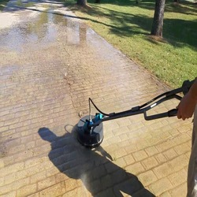

-
Houston Concrete Supplier Tips: Cleaning Stamped Concrete
Posted on July 21, 2022 by Phoebee Johnson

Professional Houston cement mixing helps you complete your concrete project, no matter the type or size.
As a top Houston concrete supplier, we get a lot of questions about how to maintain concrete surfaces. Stamped concrete is commonly used for things like patios and walkways to add a decorative element to the concrete. This means the concrete is stamped before it cures to create a pattern out of depressions in the concrete. If you have stamped concrete, you might wonder what the best options for cleaning and maintaining it. We’ll cover just that in this blog.
Stamped Concrete Cleaning Steps from your Houston Concrete Supplier
Generally speaking, you should clean your stamped concrete at least twice a year, more as needed. This helps get rid of dirt and debris that can cause stains over time. The good news is that cleaning stamped concrete is a pretty easy thing you can do to maintain your patio or walkway.
The first thing we recommend is sweeping the concrete regularly. As a Houston concrete supplier, we see a lot of stained, damaged concrete from simply letting dirt and debris pile up and sit on concrete surfaces. Instead, use a broom or even a leaf blower to remove these things before they cause a problem.
You also want to wash your stamped concrete from time to time, at least twice a year, as we mentioned. This helps remove stubborn grime that can seep into the concrete and cause staining. You can do this with a mop or with a power washer. Use a mild detergent that is safe for plants to avoid damaging the landscaping surrounding your concrete. Apply it to the concrete, including the nooks and crannies, before rinsing it away and allowing the concrete to dry. Just keep in mind that you shouldn’t use harsh chemicals or extremely high pressures, as they can damage the concrete.
Reseal Concrete to Prevent Stains
If your concrete still looks dirty or dull after a good cleaning session, then it may be that you need to reseal the concrete. Generally, after the stamped concrete cures, you apply a protective sealant or coating to prevent stains from taking hold in your concrete. If you forget this step, then you might find yourself needing more frequent repairs and replacement from your Houston ready mix contractor.
Concrete sealants typically only last between two and three years before they need resealing. Therefore, it may be that you need to reseal your stamped concrete after cleaning it thoroughly. You can find concrete sealants at your local hardware store. Typically, it’s best to choose the same type of sealant as the original coating. However, if that isn’t possible, any concrete sealant will work. Just make sure you choose a formula that does what you need it to. For instance, you might want a sealant rated for high traffic areas if your patio gets a lot of use during the year.
TEXAN Concrete Ready Mix – Your Houston Ready Mix Contractor
When you need Houston ready mix concrete, our team at TEXAN Concrete Ready Mix is here to help. We offer customized concrete formulations to ensure your concrete is tailored to your task. Our team offers concrete for a wide range of projects, from residential patios and driveways to concrete foundations and walkways. Choose our experts for top-quality concrete at budget-friendly prices. Contact us now to get a free quote from our team!
This entry was posted in Concrete, Concrete Maintenance. Bookmark the permalink.